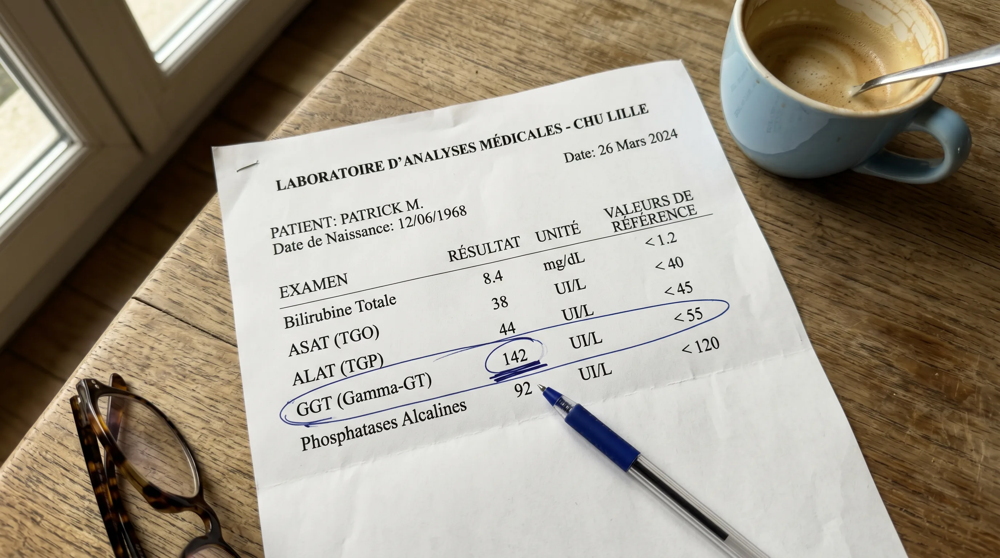
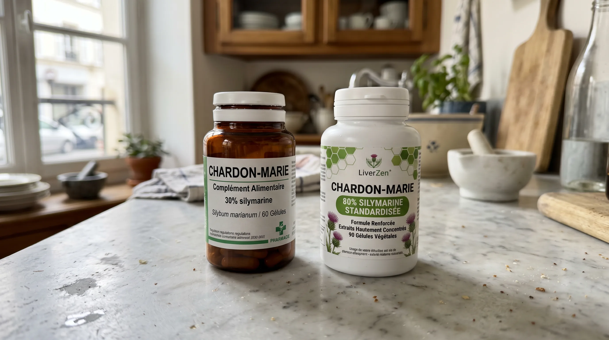
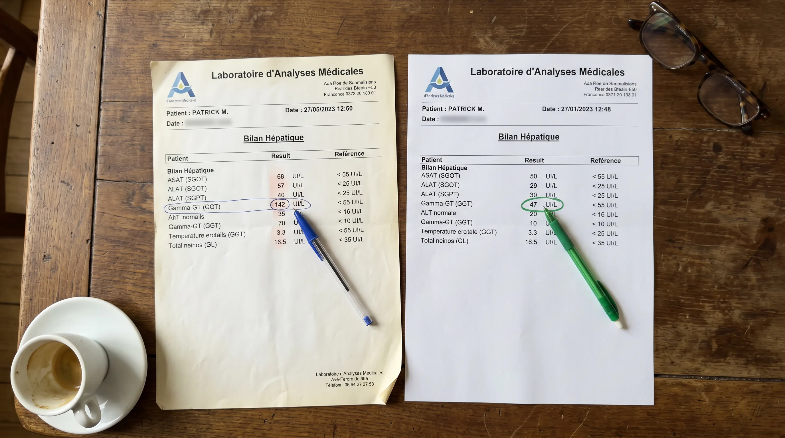
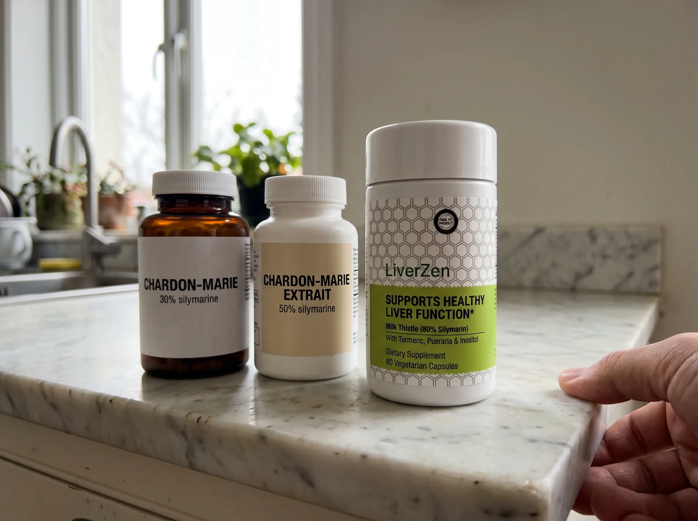

Mon mari boit deux verres de vin tous les soirs depuis 25 ans. Son médecin l'a prévenu trois années de suite. Voici ce que j'ai fini par faire en silence — et ce qui s'est passé en 7 semaines.
Je m'appelle Catherine. J'ai 52 ans. Ce que je vais vous raconter, je ne l'ai pas encore dit à mon mari.
La vérité sur le foie d'un homme de 55 ans, c'est qu'il ne dit rien.
Pas un signe. Pas une douleur. Pas un avertissement.
Mon mari s'appelle Patrick. Il a 56 ans. Il dirige sa propre entreprise de menuiserie depuis ses 31 ans. Quinze, parfois vingt employés, selon les mois. Il part à 6 h du matin, il rentre à 19 h 30, et la première chose qu'il fait en passant la porte, c'est de s'asseoir au bout de la table et de se servir un verre de rouge.
Deux verres en semaine. Trois le vendredi. Quatre le dimanche, quand on déjeune chez ma belle-mère et qu'on rentre tard.
Ça fait 25 ans.
Patrick n'est pas alcoolique. Je tiens à ce que ce soit clair. Il n'a jamais été ivre devant nos enfants. Il n'a jamais raté un jour de travail. Personne dans la famille ne dirait qu'il a un problème. C'est un homme qui prend un verre le soir. Comme son père. Comme le mien. Comme la moitié des hommes de notre âge dans ce pays.
Et c'est précisément pour ça que personne — pas même lui — n'a vu venir ce qui se préparait dans son foie.
J'AVAIS ESSAYÉ. PENDANT DES ANNÉES.
Je ne suis pas du genre à harceler. Mais j'avais essayé, à ma manière.
Je laissais traîner des articles sur la table. Je glissais le nom du mari d'une amie qui avait eu une mauvaise surprise à sa visite annuelle. Je proposais des soirées sans vin, « histoire de changer ». Je servais de l'eau pétillante avec des rondelles de citron en espérant qu'il s'en serve.
Il hochait la tête. Il me remerciait pour le repas. Il se servait son verre de rouge.
Je n'allais pas en faire un drame. J'aime cet homme. Il travaille plus dur que n'importe qui que je connais. Il a élevé deux enfants avec moi. Il a payé cette maison. Il a le droit à son verre du soir.
Mais à sa visite chez le médecin il y a trois ans, le Dr Lefèvre — qui le suit depuis 18 ans — lui a dit pour la première fois quelque chose qui m'a empêchée de dormir.
« Patrick, vos chiffres montent un peu. Faudrait peut-être lever le pied sur le verre du soir. »
Patrick est rentré, m'a raconté ça en haussant les épaules, et s'est servi son verre.
L'année suivante, même phrase. Chiffres encore plus hauts.
L'année d'après — l'an dernier — le Dr Lefèvre a été plus direct. « Patrick, là, on est à un niveau qui m'inquiète. Si on ne fait rien, dans deux ans, on aura une vraie discussion à avoir. »
Patrick a hoché la tête. Est rentré. S'est servi son verre.
C'est cette nuit-là que j'ai commencé à me renseigner toute seule.

CE QUE J'AI APPRIS QUE MON MARI N'AVAIT JAMAIS VOULU SAVOIR
Le foie est l'organe le plus silencieux du corps humain.
Il n'a aucun récepteur de douleur. Aucun. Vous pouvez avoir un foie qui souffre depuis dix ans et ne ressentir absolument rien. Le premier symptôme que la plupart des hommes ressentent, c'est quand les chiffres arrêtent de monter doucement et qu'ils se mettent à courir.
Les gamma-GT — c'est l'enzyme que le médecin de Patrick surveillait — c'est le voyant rouge le plus précoce qu'on a pour détecter un foie sous pression. Les valeurs normales chez l'homme sont en dessous de 55 UI/L.
Patrick était à 142.
J'ai regardé ce chiffre pendant un long moment. Je me suis dit qu'il fallait que je trouve quelque chose. Pas pour le faire arrêter — il n'arrêterait pas, ça je le savais. Quelque chose qui marche pendant qu'il continue.
C'est comme ça que je suis tombée sur le chardon-Marie.
LE PIÈGE DE LA PHARMACIE
Le chardon-Marie, ce n'est pas nouveau. C'est une plante que les médecins européens utilisent depuis cinquante ans pour soutenir le foie. La molécule active s'appelle la silymarine.
Voici ce que j'ai compris en lisant les études — et ce qu'aucune femme dans ma situation ne sait au départ.
La plupart des compléments de chardon-Marie sont à 30 ou 40 % de silymarine. Les études cliniques, elles, sont faites avec 80 %. C'est ça qui fait la différence entre un produit qui agit et un produit qui sert à rien.
Quand vous allez à la pharmacie ou en parapharmacie acheter une boîte de chardon-Marie, vous trouvez quoi sur le rayon ? Du 30 %. Parfois du 40 %. Parfois pas de pourcentage du tout sur la boîte, parce que le produit n'est même pas standardisé. C'est-à-dire que le pourcentage de silymarine — la molécule active — n'est pas garanti d'une gélule à l'autre.
C'est la même plante. Mais ce n'est pas le même produit.
C'est exactement comme si vous achetiez du paracétamol et qu'il y en ait un tiers de la dose dans le comprimé. Vous le prendriez deux semaines, vous ne sentiriez rien, et vous décideriez que « le paracétamol, ça marche pas ».
C'est ce que des millions de Français font avec le chardon-Marie chaque année.
Il y avait deux boîtes de chardon-Marie de pharmacie dans notre placard quand j'ai commencé à creuser le sujet. Patrick les avait achetées six ans plus tôt, sur le conseil d'un ami. Il en avait pris pendant trois semaines. Il avait arrêté en disant « ces trucs-là, ça sert à rien ».
Il n'avait jamais pris de chardon-Marie. Il avait pris une version diluée d'un produit qu'il pensait avoir essayé.

POURQUOI J'AI CHOISI LIVERZEN
J'ai cherché un produit standardisé à 80 % de silymarine. Pas en pharmacie — la plupart des pharmacies françaises ne stockent pas la version standardisée à ce niveau. Il faut chercher en ligne.
J'en ai comparé sept ou huit. LiverZen était le seul qui :
- Est standardisé à 80 % de silymarine (le pourcentage qu'on retrouve dans les études cliniques)
- Apporte 240 mg de silymarine pure par gélule
- Est fabriqué en Europe avec un contrôle qualité indépendant
- Offre une garantie 60 jours, boîte vide acceptée — ils remboursent même si vous avez tout pris
C'est cette dernière partie qui m'a décidée. Si je commande une boîte, que Patrick la prend pendant deux mois, et que rien ne change — je récupère mon argent. Même si la boîte est vide. Sans question.
C'est la seule garantie qui veut dire quelque chose, dans ce secteur.
CE QUE J'AI FAIT (ET CE QUE JE N'AI PAS FAIT)
Je n'ai pas annoncé à Patrick que je commandais quelque chose. Je n'ai pas fait de discours. Je n'ai pas dit « j'ai trouvé une solution miracle ».
J'ai posé la boîte à côté de ses vitamines, sur l'étagère de la cuisine où il prend son comprimé de magnésium tous les matins.
Je connais mon mari. Ce que je laisse là, il le prend. Sans poser de questions. C'est comme ça depuis 28 ans.
LES 7 SEMAINES
Je vais vous raconter exactement ce que j'ai vu, sans rien dramatiser.
Semaines 1 et 2 : rien. Patrick prenait sa gélule tous les matins avec son café. Je ne lui ai pas demandé s'il sentait quelque chose. Il ne m'a rien dit. Je ne m'attendais à rien — j'avais lu que les premiers effets visibles arrivent autour de la troisième ou quatrième semaine.
Semaine 3 : le coup de barre de l'après-midi. Patrick m'a dit, en passant, qu'il avait moins de coups de barre vers 16 h sur le chantier. Rien de spectaculaire. Juste « je suis moins crevé l'après-midi en ce moment, je sais pas pourquoi ». Je n'ai pas relevé.
Semaine 5 : le visage du matin. C'est moi qui l'ai vu en première. Il avait toujours été un peu bouffi le matin — surtout les lendemains de soirée. Cette semaine-là, son visage avait quelque chose de différent. Plus net. Plus jeune. Plus lui.
Semaine 7 : la prise de sang. Patrick avait sa visite annuelle de contrôle chez le Dr Lefèvre. Bilan hépatique. Il est rentré, a posé l'ordonnance et les résultats sur la table sans rien dire.
J'ai regardé.
Gamma-GT : 47.
Sous la barre des 55. Dans la norme.

CE QUE LE Dr LEFÈVRE A DIT
Patrick m'a raconté la consultation comme si c'était banal.
Le médecin a regardé l'écran. Il a fait défiler les trois années précédentes. Il a regardé Patrick par-dessus ses lunettes et il a dit :
« Patrick, qu'est-ce que vous avez changé ? »
Patrick a haussé les épaules. « Rien de spécial. »
Le Dr Lefèvre n'a pas insisté. Il a juste dit « Bon. Continuez. »
Patrick a continué à se servir son verre de rouge le soir. Trois quand on a des invités. Quatre le dimanche midi chez ma belle-mère.
Pendant les pires années, je me levais à 2 h du matin pour vérifier qu'il respirait. Cette habitude est partie quelque part autour de la huitième semaine. Je dors toute la nuit maintenant.
TROIS FEMMES QUI ONT FAIT LA MÊME CHOSE
J'ai parlé de tout ça dans un groupe de femmes de mon âge sur Facebook. Trois m'ont répondu en privé pour me dire qu'elles avaient fait la même chose. Voici ce qu'elles m'ont écrit, mot pour mot.
Je vous donne leurs prénoms parce qu'elles m'y ont autorisée. Pas leurs noms de famille. Ce ne sont pas des témoignages payés. Ce sont des femmes qui ont fait exactement la même chose que moi, en silence, parce qu'on connaît nos maris.
POURQUOI ÇA MARCHE QUAND TOUT LE RESTE A ÉCHOUÉ
Je ne suis pas médecin. Je suis enseignante en collège. Je vais vous expliquer comme je l'ai compris.
Quand votre mari boit son verre de rouge le soir, son foie le métabolise. C'est son boulot. Le problème n'est pas le verre. Le problème, c'est la charge cumulée sur 25 ans, à raison de 365 soirs par an.
La silymarine — la molécule active du chardon-Marie, à 80 % de standardisation — agit comme un garde du corps pour les cellules du foie. Elle aide à soutenir leur fonctionnement normal pendant qu'elles font le travail quotidien. Elle aide à soutenir l'activité antioxydante naturelle de l'organe. Elle aide à soutenir la capacité naturelle de régénération du foie.
Elle ne fait pas arrêter de boire. Elle ne remplace pas une bonne hygiène de vie. Elle ne soigne aucune maladie.
Ce qu'elle fait, à la concentration utilisée dans les études cliniques, c'est soutenir un organe qui n'a pas la possibilité de se plaindre.
Pour un homme de 55 ans qui ne va pas changer son rituel du soir, c'est exactement ce qu'il faut.
LA GARANTIE — POURQUOI C'EST IMPORTANT
Je le redis : 60 jours. Boîte vide acceptée. Aucune question.
Vous commandez une boîte. Vous la posez à côté de ses vitamines. Il la prend pendant deux mois. Si rien ne se passe — si vous ne voyez aucune différence, si sa prise de sang ne bouge pas, si vous n'êtes pas convaincue — vous renvoyez la boîte vide et on vous rembourse.
Pas de formulaire. Pas d'enquête de satisfaction. Pas de « êtes-vous sûre ? ». Vous écrivez un email, vous renvoyez la boîte, c'est terminé.
C'est la seule raison pour laquelle moi-même je suis passée à l'action. Si ça ne coûte rien d'essayer, le seul vrai coût, c'est de ne pas essayer.
VOUS ÊTES L'UNE DE DEUX FEMMES
Si vous êtes encore en train de lire, c'est que quelque chose dans cet article a fait écho. Peut-être la phrase du médecin que votre mari a haussée d'épaules. Peut-être les boîtes de compléments à moitié vides dans votre placard. Peut-être les nuits où vous vous réveillez à 2 h en pensant à ses chiffres.
Vous êtes l'une de deux femmes maintenant.
La première se dit « je vais y réfléchir ». C'est exactement la phrase qui a fait passer trois années sans rien faire. Elle ferme l'onglet. Elle retourne à sa journée. Et dans 18 mois, elle sera assise dans un cabinet de médecin avec une nouvelle conversation à avoir, plus difficile.
La deuxième commande une boîte. Pas parce qu'elle est sûre que ça marchera. Parce qu'elle sait que ne rien faire n'a pas marché non plus, et que cette boîte-là, au moins, est garantie 60 jours, boîte vide acceptée.
Les deux femmes vont passer les 7 prochaines semaines de la même façon. Leur mari va boire son verre du soir. Les chiffres vont continuer à monter, ou ils vont commencer à descendre.
La seule différence entre les deux femmes, c'est ce qu'elles font dans les 30 prochaines secondes.
VÉRIFIER LA DISPONIBILITÉ MAINTENANT→ VÉRIFIER LA DISPONIBILITÉ — CHARDON-MARIE STANDARDISÉ 80 % SILYMARINE
— Catherine
52 ans, mariée à Patrick depuis 28 ans
« Je n'ai pas arrêté son verre du soir. J'ai juste arrêté d'y penser. »
→ GARANTIE 60 JOURS — BOÎTE VIDE REMBOURSÉE
-
Sylvie B.Je viens de lire ça à mon mari. Il a haussé les épaules. Je commande sans lui en parler.J'aime· Répondre· ❤️ 14· il y a 22 min
-
Marie-Claude L.Mon médecin m'avait justement dit « il existe des versions standardisées à 80 % » l'an dernier. Je ne suis jamais allée chercher. Quelle conne je fais.J'aime· Répondre· ❤️ 9· il y a 41 min
-
Florence T.Catherine, votre histoire ressemble à la mienne mot pour mot. Mon mari Gérard, 59 ans, deux whiskys le soir, gamma-GT à 168 en novembre. Je viens de commander. Je vous tiens au courant.J'aime· Répondre· ❤️ 22· il y a 1 h
-
Brigitte M.La phrase « je préfère qu'il pense qu'il se gère mieux » m'a fait pleurer. C'est exactement ça.J'aime· Répondre· ❤️ 18· il y a 1 h
-
Anne D.Les hommes de cette génération ne demandent pas d'aide. C'est à nous de la trouver. C'est triste mais c'est comme ça.J'aime· Répondre· ❤️ 31· il y a 2 h
-
Sophie V.J'ai 47 ans, mon mari en a 51, déjà gamma-GT à 89. C'est trop tôt pour qu'il s'en occupe ?J'aime· Répondre· ❤️ 5· il y a 2 hCatherine M.Sophie, ce n'est jamais trop tôt. C'est trop tard qui est le problème.J'aime· Répondre· ❤️ 28· il y a 1 h 47
-
Valérie F.La garantie 60 jours boîte vide, c'est la seule raison pour laquelle j'ai commandé. Ça veut dire qu'ils savent que ça marche.J'aime· Répondre· ❤️ 12· il y a 3 h
-
Hélène P.J'ai partagé l'article à trois copines. On a toutes le même problème.J'aime· Répondre· ❤️ 19· il y a 3 h
-
Christine R.Le passage sur « le visage du matin » — c'est exactement ce que ma mère disait de mon père dans les années 80, sauf qu'à l'époque il n'y avait rien à faire. Aujourd'hui il y a quelque chose. C'est ça qui me bouleverse.J'aime· Répondre· ❤️ 24· il y a 4 h
-
Nicole G.Patrick a de la chance d'avoir une femme comme vous. Beaucoup de femmes auraient laissé tomber.J'aime· Répondre· ❤️ 16· il y a 5 h

